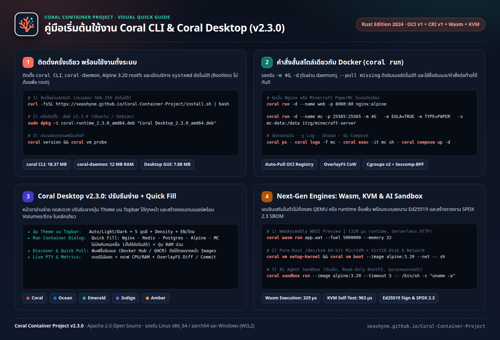
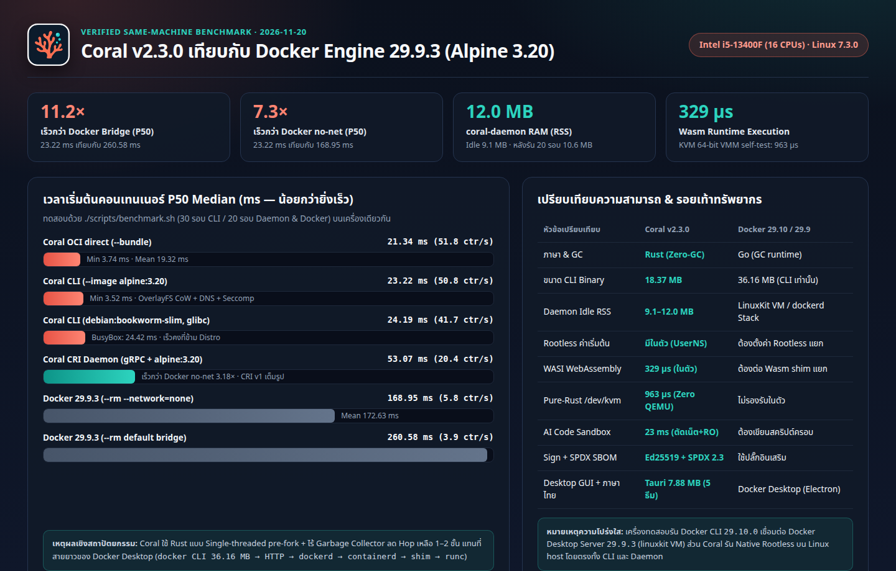

Release v2.3.0 · Rust Edition 2024 · Apache-2.0
Container Runtime ยุคใหม่ด้วย Rust
รันคอนเทนเนอร์ OCI แบบ Rootless, จัดการผ่าน Kubernetes CRI v1 gRPC, รัน WebAssembly ระดับไมโครวินาที (coral-wasm) และแยกเคอร์เนลด้วย KVM 64-bit MicroVM & AI Agent Sandbox (coral-vmm) ครบจบในชุดเดียว
23.2 ms
OCI Container P50 Startup
เร็วกว่า Docker 7.3×–11.2× บนเครื่องเดียวกัน
329 µs
WASI WebAssembly Execution
coral-wasm · wasmi 2.0 (Fuel + RAM cap)
963 µs
Native /dev/kvm 64-bit Boot
coral-vmm · Pure-Rust Long Mode Self-Test
9.1 MB
coral-daemon Idle RAM
0 Clippy warnings · 10 Rust Crates
ทำไมต้อง Coral?
Coral ออกแบบมาเพื่อแก้ปัญหาความช้าของ Runtime แบบเก่า ลดช่องโหว่ด้านหน่วยความจำด้วย Rust และเพิ่มความสามารถระดับ Next-Gen สำหรับยุค AI Agent และ Serverless WebAssembly
Workflow ครบเทียบชั้น Docker/Podman
WebAssembly Runtime (coral-wasm)
KVM MicroVM & AI Sandbox (coral-vmm)
ดาวน์โหลด & วิธีติดตั้ง
เลือกวิธีติดตั้งที่เหมาะกับระบบของคุณ — รองรับ Linux x86_64 (Rootless-first) และ Windows ผ่าน WSL2 + Coral Desktop
curl -fsSL https://seashyne.github.io/Coral-Container-Project/install.sh | bashcoral version
coral vm probe
coral run alpine:3.20 /bin/sh -c 'echo "Hello from Coral PID=$$"'curl -fsSLO https://github.com/seashyne/Coral-Container-Project/releases/download/v2.3.0/coral-runtime_2.3.0_amd64.deb
sudo dpkg -i coral-runtime_2.3.0_amd64.deb
systemctl --user enable --now coral-daemon.service
coral versionLinux (Ubuntu / Fedora / AppImage)
Windows 10 / 11 (WSL2)
git clone https://github.com/seashyne/Coral-Container-Project.git
cd Coral-Container-Project/coral_repo
./install.sh # compiles --release & installs ~/.local/bin/coral
./verify.sh # runs 60 unit/E2E tests + strict Clippy -D warnings
ข้อกำหนดระบบ (Prerequisites)
คู่มือและตัวอย่างคำสั่ง CLI
# Docker-style syntax (no --image or -- required, auto-pulls missing images!)
coral run -d --name web -p 8080:80 -m 256m --pids-limit 64 nginx:alpine
# Minecraft PaperMC Server in one command (persistent volume + 4 GB RAM cap)
coral run -d --name mc-server -p 25565:25565 -m 4G \
-e EULA=TRUE -e TYPE=PAPER -e VERSION=LATEST \
-v mc-data:/data --restart unless-stopped itzg/minecraft-server
# Detached worker with live healthcheck, logs, interactive shell & stats
coral run -d --name worker --restart always \
--health-cmd "test -f /tmp/ready" --health-interval 5 \
alpine:3.20 /bin/sh -c 'touch /tmp/ready; sleep 3600'
coral ps
coral logs -f --tail 50 mc-server
coral exec -it worker /bin/sh
coral stats --watch worker
coral cp ./config.yaml worker:/data/config.yaml# Build OCI image from Dockerfile with Content-Addressable Step Cache
coral build -t myapp:2.1 .
# Cryptographic Ed25519 image signing, tamper verification & SPDX 2.3 SBOM
coral keygen
coral sign myapp:2.1
coral verify myapp:2.1
coral sbom myapp:2.1 -o myapp.spdx.json
# Multi-container stack & Kubernetes CRI v1 Unix Socket readiness probe
coral compose up -d
coral --endpoint unix://$HOME/.local/state/coral/daemon/coral.sock cri-status --verbose
# Private Registry push & offline archive export/import (.tar.zst)
coral login ghcr.io -u seashyne
coral push ghcr.io/seashyne/myapp:2.1
coral save myapp:2.1 -o myapp.tar.zst# Run any WASI Preview 1 .wasm or .wat module directly in microseconds
coral wasm run hello.wasm --fuel 5000000 --memory-mb 32 --json
# Pack a .wasm binary into an OCI image (zero Linux rootfs overhead)
coral wasm pack hello.wasm -t hello-wasm:v1
coral run --runtime wasm hello-wasm:v1
# Serve as a Serverless WASI HTTP/1.1 microservice (fresh sandbox per request!)
coral wasm serve hello-wasm:v1 --listen 127.0.0.1:8080 --fuel 10000000 --memory 32# Verify host VT-x/AMD-V hardware & boot a 64-bit Long Mode /dev/kvm MicroVM
coral vm probe
# Download official Alpine Linux 6.6 guest kernel (+ VirtIO/ext4 modules) & boot persistent MicroVM
coral vm setup-kernel
coral vm disk create ./vmdata.img --size-mb 64 --ext4
coral vm boot --image alpine:3.20 --disk ./vmdata.img --disk-mount /mnt/data --net -p 8080:8080 --timeout 15 -- \
/bin/sh -c 'echo "Kernel=$(uname -r) IP=$(ip -4 addr show eth0 | awk "/inet/{print \$2}")"'
# Enable shell tab-autocomplete & Prometheus metrics endpoint (http://127.0.0.1:9108/metrics)
coral completion bash | sudo tee /etc/bash_completion.d/coral >/dev/null
# Run untrusted / AI-generated code in a zero-network, read-only, hard-timeout sandbox
coral sandbox run --image alpine:3.20 --timeout 5 --memory 64 --json -- \
/bin/sh -c 'echo "Isolated PID=$$ UID=$(id -u)"'
เจาะลึกฟีเจอร์ Next-Gen (v2.3.0)
Coral Desktop (Tauri v2)
ผลทดสอบจริง & ตารางเปรียบเทียบกับ Docker

| คุณสมบัติ / ตัวชี้วัด | Coral v2.3.0 (Rust) | Coral Daemon (CRI v1) | Docker 29.10 / 29.9.3 |
|---|---|---|---|
สถาปัตยกรรม 10 Rust Crates
| Crate | Path | Responsibility |
|---|---|---|
coral-api |
coral_repo/api |
Kubernetes CRI v1 Protobuf & Tonic gRPC bindings (including bidirectional ExecStream PTY) |
coral-oci |
coral_repo/pkg/oci |
OCI Runtime Specification v1.0.2 parser, validator & state.json model |
coral-cgroups |
coral_repo/pkg/cgroups |
Cgroups v2 memory/CPU/PIDs enforcement & live kernel telemetry |
coral-net |
coral_repo/pkg/networking |
CNI v1.0.0 bridge, custom networks, sibling /etc/hosts & pasta/slirp4netns egress |
coral-runtime |
coral_repo/pkg/runtime |
Root/rootless lifecycle, OverlayFS CoW, Seccomp-BPF, Cap drop, PTY & setns exec |
coral-wasm |
coral_repo/pkg/wasm |
WASI Preview 1 WebAssembly runtime (wasmi 2.0) with fuel & linear memory ceilings |
coral-vmm |
coral_repo/pkg/vmm |
Pure-Rust Linux /dev/kvm 64-bit Long Mode hypervisor, newc initramfs & AI Sandbox |
coral-daemon |
coral_repo/cmd/coral-daemon |
Tokio + Tonic CRI v1 server, step-cached builds, OCI push/pull, persistence & auto-resume |
coral-cli |
coral_repo/cmd/coral-cli |
Single-threaded pre-fork coral CLI covering OCI, Compose, Wasm, KVM & Sandbox |
coral-e2e-tests |
coral_repo/tests |
60 automated unit, OCI, parity, CRI gRPC, Wasm & hardware KVM integration tests |